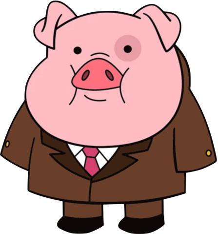
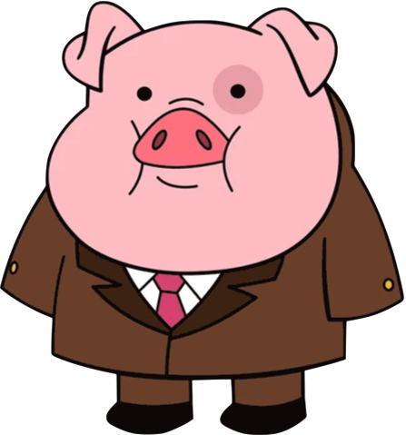
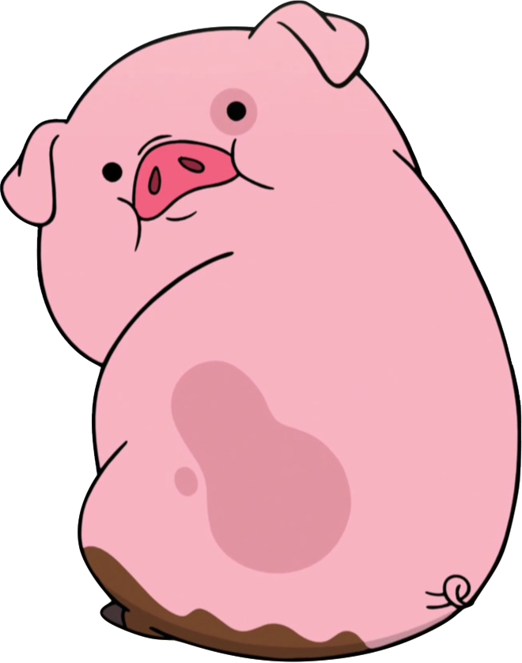
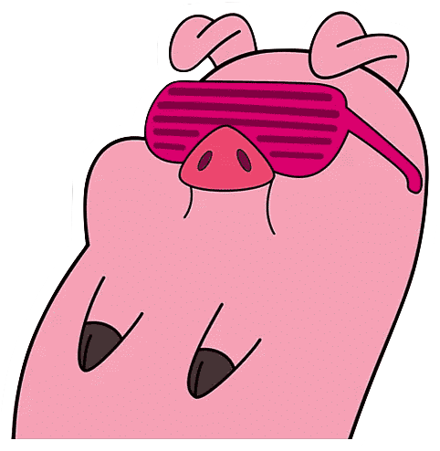
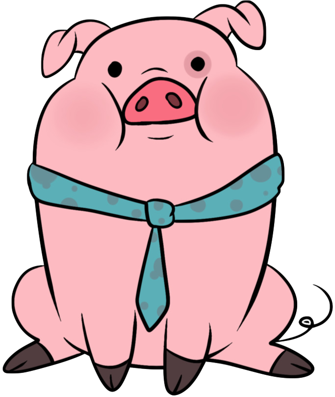

Pablo Torralba
Responsable de la lógica JavaScript
Trabajo realizado en el grupo:
Diseño de JavaScript para el juego principal, movimientos, obstáculos, aparición de bombas, diseño del juego, etc

En esta página web vas ha encontrar un proyecto realizado por alumnos de la universidad Carlos III de Madrid de la asignatura "Aplicaciones Multimedia".
Hemos desarrollado esta página web para presentar nuestro juego basado en la película "Las crónicas de Spiderwick", con Cerdonio como personaje principal de la historia, que se encuentra en un bosque lleno de bombas de la cual tiene que escapar de ello.

ESCAPA DE LAS BOMBAS
Play again
En un principio nuestro personaje traspasaba los muros y para solucionarlo quisimos, con un bucle, recorrer todos los bloques que conforman nuestros muros. Tras muchos intentos esa forma no nos dio resultado, por lo que en nuestro código los bloques se comprueban manualmente uno por uno si el personaje ha chocado con alguno de los muros y cada vez que se entra en las funciones de los diferentes tipos de movimientos.
Por otro lado, la bomba, al tener una configuración de aparición aleatoria a lo largo de nuestro espacio, si coincidían sus coordenadas con las de alguno de nuestros bloques se colocaba encima, algo que no nos pareció realista y que quisimos solucionar declarando los bloques en una clase protegida en las que no estuviese permitido que las coordenadas de otros elementos (la bomba en este caso) coincidiesen. No fuimos capaces de que esto funcionase para todos los casos, ya que uno de los aspectos principales de nuestro juego es que los bloques también se configuran de forma aleatoria en cada partida y eso nos lo dificultó mucho, por lo que la solución final acordada fue traer los muros al frente y dejar que la bomba quedase detrás de los muros. Así con este diseño cuando ambos coinciden, la bomba queda detrás y no se ve.
El tercer problema fue que, como nuestro personaje se mueve con las flechas del teclado, cuando este se movía hacia arriba o hacia abajo la página web lo hacía a su vez, desplazándose y en ocasiones, si el movimiento era continuado, desapareciendo el escenario del juego de la pantalla. Por tanto, para no tener que diferenciar los movimientos, adaptamos el tamaño de esa pestaña a las dimensiones del juego, así ya este queda centrado en la pantalla y con las flechas solo se mueve lo que nosotros queremos, el personaje.
Puntos fuertes:
Destacamos como puntos fuertes del proyecto la aleatoriedad del escenario del juego para que, cada vez que carga, y manteniendo el número de bloques dejando un contexto ordenado, haya variaciones y no resulte repetitivo cuando se juega varias veces; y la alteración de la aleatoriedad de las coordenadas en las que aparece la bomba para que, dentro de esa aleatoriedad, se elijan coordenadas cercanas a los movimientos que va siguiendo el personaje y así añadirle al juego más dificultad.
Inicialmente estimamos que con un previo estudio individual de los contenidos de la asignatura y su posterior puesta en común y desarrollo del proyecto durante las clases de laboratorio iba a ser suficiente, porque sentimos que en la primera clase en la que nos dedicamos a exponer nuestras ideas y a planificar las características del videojuego y las posibilidades de implementación de código para las diferentes propuestas. Pronto cuando con los primeros errores nos empezaron a descuadrar los tiempos de la planificación nos dimos cuenta de que nos iba a conllevar más horas por lo que nos repartimos el trabajo en dos equipos, uno se encargó de la lógica y el otro del diseño, trabajamos cada grupo por separado fuera del horario de clase y en la clase de laboratorio poníamos el código en común y acordábamos entre todos el trabajo a hacer para la siguiente. Aún así consideramos que podríamos haber gestionado mejor el tiempo porque hay características del juego que en el primer diseño eran de otra manera pero que, debido a errores en su ejecución, tuvimos que sacrificarlas por soluciones de implementación más sencilla.
Esta página debe reflejar las responsabilidades generales de cada miembro del equipo (es decir, el rol o roles principales de cada uno: coordinación, desarrollo (HTML/CSS/JavaScript), diseño creativo, etc.).
El código HTML se diseñó durante las primeras sesiones de laboratorio entre todos los miembros del grupo y posteriormente se dividió el proyecto en dos partes; el diseño (CSS) realizado por María Arceo y Xuyu Zhang y la lógica (JavaScript) por Pablo Torralba y Carlota Morales.
Responsable de la lógica JavaScript
Trabajo realizado en el grupo:
Diseño de JavaScript para el juego principal, movimientos, obstáculos, aparición de bombas, diseño del juego, etc
Responsable de la lógica JavaScript
Trabajo realizado en el grupo:
Diseño de JavaScript para el juego principal, movimientos, obstáculos, aparición de bombas, diseño del juego, etc
Diseño CSS/parte HTML
Trabajo realizado en el grupo:
Desarrollo parte del HTML(implementado posteriormente) y principalmente parte del diseño de la página web (css). Nav principal, logo, tablas, etc
Diseño CSS/parte HTML
Trabajo realizado en el grupo:
Desarrollo parte del HTML(implementado posteriormente) y principalmente parte del diseño de la página web (css). Nav principal, logo, tablas, etc
Pagina de REFERENCIA
| ¿Dónde? | Enlace |
|---|---|
| w3schools | Accedo a w3schools |
| YouTube | Página donde puedes encontrar un montón de referencias, vídeos tutoriales, entre otras para obtener nuevas ideas y resolver algunas dudas. |
| Diapositivas |
Aula Global de la universidad, dentro de la asignatura "Aplicaciones Multimedia" tenemos las diapositivas de clase para la ayuda del desarrollo Aula global Uc3m |
Fotos |
El personaje de nuestro juego al ser un personaje de la peli "Las Crónicas de Spiderwick", hemos utilizado una imagen de ello Cinemanet |
Pagina de MULTIMEDIA